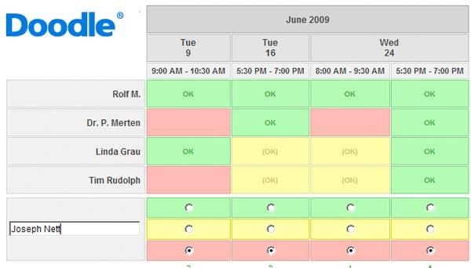
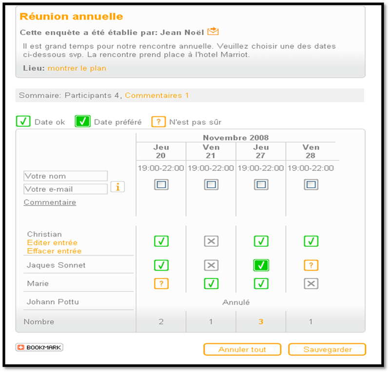

Events Planning Tools
It consist of tools allowing to optimize the organisation of meetings within a company, or other events. One of the most known of theses is Doodle which is excellent beacause it allows the plannification of events but also to propose surveys with the participants.
Sites Applications
In addition to meetings theses sites allow companies to create groups, with logos. Moreover you can make time-limited surveys, the sites choose the mosts upvoted answers to te survey.
Advantages & Flaws
Advantages
Theses sites are advantageous because :
- They offer a better organisation to groups and companies
- They help finding common agreements between people for meetings
- They are very simple to use
- Clear explanation
- There is no spamming(mails...)
Flaws
There's some drawbacks to theses sites :
- Some of them aren't free to use
- Security problems
- Lots of adds forthe free ones
- Doesn't resolve the lacks of availability
- Limited places
- Internet connexion required
Most popular sites
Here's the Top 3 of the most used Event Planning websites
First let's see Doodle This software isn't free, belongs to Freemium Here's an exemple of use for this site: 
Then there is Framadate
This one is free and requires an internet connexion
Here's an exemple of use for this site:

And then there is Moreganize which is pretty beautiful ! In addition to surveys and meetings organisation, there is the possibility of having a common list with several participants and tasks. Here's an exemple of use for this site: 